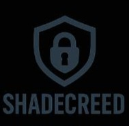

Harkerbyte
Bit by bit, byte by byte...
Our continual input is directed toward making positive impacts and bridging digital gaps. At Harkerbyte, we engineer custom software — minimized, lightweight, and optimized to run seamlessly across the widest range of devices. As an open-source software company, it has been our honor to release efficient scripts, frameworks, and modules that empower productivity and innovation in everyday workflows.
For every problem solved begins with a byte.
No more excuses for why you haven’t gotten started.
We’ve removed the weight, simplified the tools, and brought performance to your fingertips. Whether you’re coding, testing, or building, our lightweight frameworks are designed so you can start now, grow fast, and scale smart.
Bit by bit, byte by byte — the future is engineered by those who take the first step.
üöÄ My Work

Shadecreed
A command-line penetration testing toolkit designed for web application assessment. It provides tools to inject custom headers, deploy and test XSS payloads, and scan for vulnerabilities.
üîó View RepositorySpyder
An Advanced Networking Tool for Testing and chat system over the network — Designed for Linux Systems
üîó View RepositorySocials
If you find them useful, consider supporting the movement ‚Äî your contribution keeps the work alive üöÄ